Lecture 9 - Apply, mutate, map and LIME
Robert Settlage
2022-10-26
Last updated: 2023-10-11
Checks: 7 0
Knit directory: STAT5014_FALL2023/
This reproducible R Markdown analysis was created with workflowr (version 1.7.0). The Checks tab describes the reproducibility checks that were applied when the results were created. The Past versions tab lists the development history.
Great! Since the R Markdown file has been committed to the Git repository, you know the exact version of the code that produced these results.
Great job! The global environment was empty. Objects defined in the global environment can affect the analysis in your R Markdown file in unknown ways. For reproduciblity it’s best to always run the code in an empty environment.
The command set.seed(20210816) was run prior to running
the code in the R Markdown file. Setting a seed ensures that any results
that rely on randomness, e.g. subsampling or permutations, are
reproducible.
Great job! Recording the operating system, R version, and package versions is critical for reproducibility.
Nice! There were no cached chunks for this analysis, so you can be confident that you successfully produced the results during this run.
Great job! Using relative paths to the files within your workflowr project makes it easier to run your code on other machines.
Great! You are using Git for version control. Tracking code development and connecting the code version to the results is critical for reproducibility.
The results in this page were generated with repository version 20785ea. See the Past versions tab to see a history of the changes made to the R Markdown and HTML files.
Note that you need to be careful to ensure that all relevant files for
the analysis have been committed to Git prior to generating the results
(you can use wflow_publish or
wflow_git_commit). workflowr only checks the R Markdown
file, but you know if there are other scripts or data files that it
depends on. Below is the status of the Git repository when the results
were generated:
Ignored files:
Ignored: .Rproj.user/
Ignored: analysis/.Rhistory
Untracked files:
Untracked: Week4_part1.mp4
Untracked: Week4_part2.mp4
Untracked: Week4_part3.mp4
Untracked: analysis/Week_6_homework_3.Rmd
Untracked: analysis/Week_8_forcats_recipes_cache/
Untracked: week4_part4.mp4
Unstaged changes:
Modified: analysis/Week_4_Plots_using_ggplot2_plotly_more.Rmd
Modified: analysis/Week_5_matrix_vector_math.Rmd
Modified: analysis/Week_6_wrangling_munging_tidying.Rmd
Modified: analysis/Week_7_importing_data.Rmd
Modified: analysis/_site.yml
Modified: girder_raw.RDS
Modified: sensory_raw.RDS
Note that any generated files, e.g. HTML, png, CSS, etc., are not included in this status report because it is ok for generated content to have uncommitted changes.
These are the previous versions of the repository in which changes were
made to the R Markdown
(analysis/Week_9_apply_mutate_map.Rmd) and HTML
(docs/Week_9_apply_mutate_map.html) files. If you’ve
configured a remote Git repository (see ?wflow_git_remote),
click on the hyperlinks in the table below to view the files as they
were in that past version.
| File | Version | Author | Date | Message |
|---|---|---|---|---|
| Rmd | a2ca484 | rsettlage | 2023-08-22 | push all |
Last time:
Categorical data
Categorical data is best described as grouped data. This data has no intrinsic place and order (or scale) on the number line. Inclusive in this is nominal (no order) and ordinal (no scale) data. For example:
- yes/no
- eye color
- country
- satisfaction rating from 1-5 (least to most)
- income as high/med/low
Converting continuous data into categorical
Sometimes, it is advantageous to lump continuous data into groups. For instance, you may have a date variable but are only interested in year, or weight and only interested in a high/med/low summary.
Let’s play with the penguin data and see what we see:
penguins %>%
glimpse()
Rows: 344
Columns: 8
$ species <fct> Adelie, Adelie, Adelie, Adelie, Adelie, Adelie, Adel…
$ island <fct> Torgersen, Torgersen, Torgersen, Torgersen, Torgerse…
$ bill_length_mm <dbl> 39.1, 39.5, 40.3, NA, 36.7, 39.3, 38.9, 39.2, 34.1, …
$ bill_depth_mm <dbl> 18.7, 17.4, 18.0, NA, 19.3, 20.6, 17.8, 19.6, 18.1, …
$ flipper_length_mm <int> 181, 186, 195, NA, 193, 190, 181, 195, 193, 190, 186…
$ body_mass_g <int> 3750, 3800, 3250, NA, 3450, 3650, 3625, 4675, 3475, …
$ sex <fct> male, female, female, NA, female, male, female, male…
$ year <int> 2007, 2007, 2007, 2007, 2007, 2007, 2007, 2007, 2007…
penguins %>%
filter(complete.cases(.)) %>%
mutate(bill_volume = bill_length_mm * bill_depth_mm^2) %>%
ggplot(aes(x=bill_volume, y=body_mass_g)) +
geom_point(aes(color=sex, shape=species)) +
facet_grid(~island)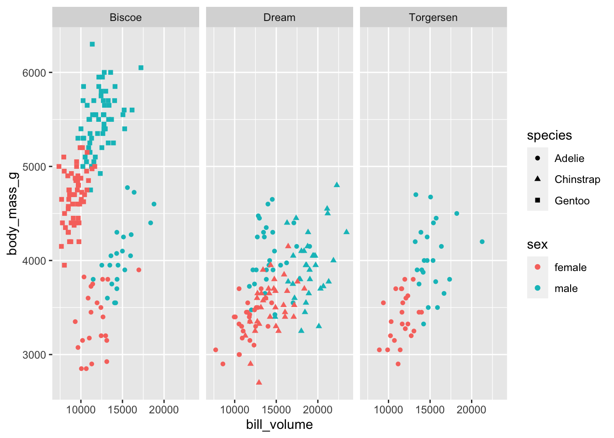
| Version | Author | Date |
|---|---|---|
| 0c7e5d9 | rsettlage | 2023-08-22 |
penguins_new <- penguins %>%
filter(complete.cases(.)) %>%
mutate(bill_volume = bill_length_mm * bill_depth_mm^2) %>%
mutate(bill_volume_quartile = case_when(
bill_volume < quantile(bill_volume, prob=c(0.25, 0.5, 0.75))[1] ~ "small",
bill_volume < quantile(bill_volume, prob=c(0.25, 0.5, 0.75))[2] ~ "small-med",
bill_volume < quantile(bill_volume, prob=c(0.25, 0.5, 0.75))[3] ~ "med-large",
TRUE ~ "large"
))
penguins_new %>%
ggplot(aes(x=sex, y=body_mass_g)) +
geom_violin(aes(color=species)) +
facet_grid(cols=vars(bill_volume_quartile), rows=vars(island))
Warning: Groups with fewer than two data points have been dropped.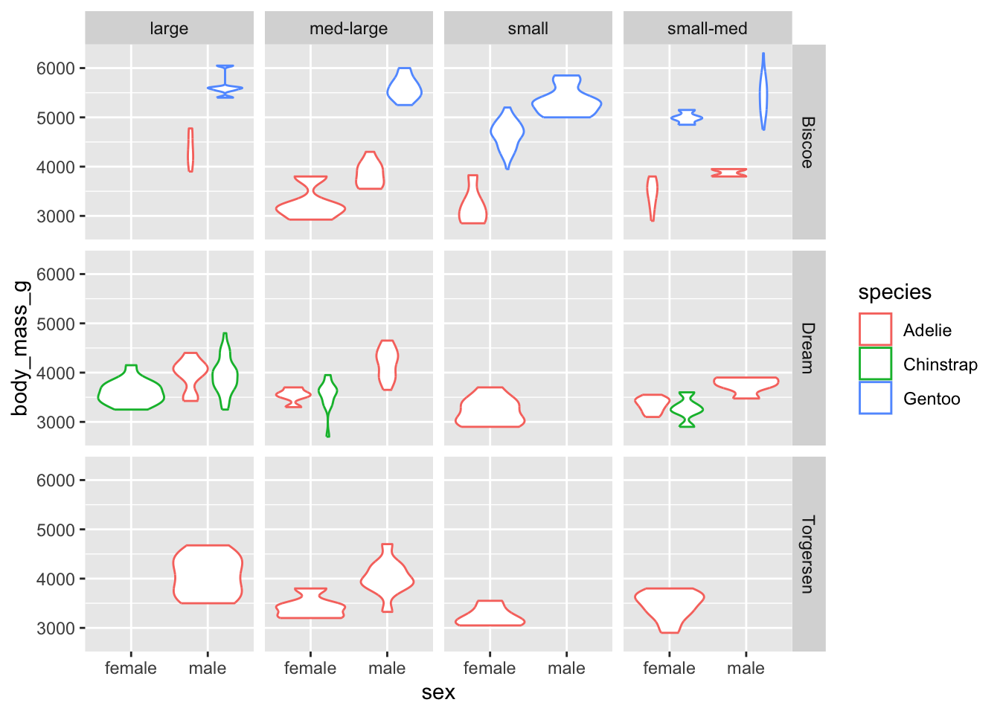
| Version | Author | Date |
|---|---|---|
| 0c7e5d9 | rsettlage | 2023-08-22 |
skim(penguins_new)| Name | penguins_new |
| Number of rows | 333 |
| Number of columns | 10 |
| _______________________ | |
| Column type frequency: | |
| character | 1 |
| factor | 3 |
| numeric | 6 |
| ________________________ | |
| Group variables | None |
Variable type: character
| skim_variable | n_missing | complete_rate | min | max | empty | n_unique | whitespace |
|---|---|---|---|---|---|---|---|
| bill_volume_quartile | 0 | 1 | 5 | 9 | 0 | 4 | 0 |
Variable type: factor
| skim_variable | n_missing | complete_rate | ordered | n_unique | top_counts |
|---|---|---|---|---|---|
| species | 0 | 1 | FALSE | 3 | Ade: 146, Gen: 119, Chi: 68 |
| island | 0 | 1 | FALSE | 3 | Bis: 163, Dre: 123, Tor: 47 |
| sex | 0 | 1 | FALSE | 2 | mal: 168, fem: 165 |
Variable type: numeric
| skim_variable | n_missing | complete_rate | mean | sd | p0 | p25 | p50 | p75 | p100 | hist |
|---|---|---|---|---|---|---|---|---|---|---|
| bill_length_mm | 0 | 1 | 43.99 | 5.47 | 32.10 | 39.50 | 44.50 | 48.60 | 59.60 | ▃▇▇▆▁ |
| bill_depth_mm | 0 | 1 | 17.16 | 1.97 | 13.10 | 15.60 | 17.30 | 18.70 | 21.50 | ▅▆▇▇▂ |
| flipper_length_mm | 0 | 1 | 200.97 | 14.02 | 172.00 | 190.00 | 197.00 | 213.00 | 231.00 | ▂▇▃▅▃ |
| body_mass_g | 0 | 1 | 4207.06 | 805.22 | 2700.00 | 3550.00 | 4050.00 | 4775.00 | 6300.00 | ▃▇▅▃▂ |
| year | 0 | 1 | 2008.04 | 0.81 | 2007.00 | 2007.00 | 2008.00 | 2009.00 | 2009.00 | ▇▁▇▁▇ |
| bill_volume | 0 | 1 | 13050.53 | 3149.32 | 7362.07 | 10754.86 | 12701.29 | 14764.74 | 23449.09 | ▅▇▅▂▁ |
penguins_new <- penguins_new %>%
mutate(bill_volume_buckets = case_when(
bill_volume > quantile(bill_volume, prob=c(0.9, 0.8, 0.7, 0.6, 0.5, 0.4))[1] ~ "Q9",
bill_volume > quantile(bill_volume, prob=c(0.9, 0.8, 0.7, 0.6, 0.5, 0.4))[2] ~ "Q8",
bill_volume > quantile(bill_volume, prob=c(0.9, 0.8, 0.7, 0.6, 0.5, 0.4))[3] ~ "Q7",
bill_volume > quantile(bill_volume, prob=c(0.9, 0.8, 0.7, 0.6, 0.5, 0.4))[4] ~ "Q6",
bill_volume > quantile(bill_volume, prob=c(0.9, 0.8, 0.7, 0.6, 0.5, 0.4))[5] ~ "Q5",
TRUE ~ "other"
))
penguins_new %>%
ggplot(aes(x=sex, y=body_mass_g)) +
geom_violin(aes(color=species)) +
facet_grid(cols=vars(bill_volume_buckets), rows=vars(island))
Warning: Groups with fewer than two data points have been dropped.
Groups with fewer than two data points have been dropped.
Groups with fewer than two data points have been dropped.
Groups with fewer than two data points have been dropped.
Groups with fewer than two data points have been dropped.
| Version | Author | Date |
|---|---|---|
| 0c7e5d9 | rsettlage | 2023-08-22 |
factors
What ggplot is doing under the hood for the text based variables is
using as.factor to convert from text to a factor. We can test and change
that. A handy alternative to as.factor is
as_factor tidyverse alternative from
forcats.
# check out the factor assignments and levels
as.factor(penguins_new$bill_volume_buckets)
[1] Q6 other Q5 Q6 Q8 other Q7 Q5 Q8 Q8 other Q6
[13] Q9 other Q9 other Q5 Q5 other other other Q6 Q5 Q5
[25] Q7 other other other Q7 other Q8 Q8 Q7 Q6 Q7 other
[37] Q6 other Q8 other Q6 Q7 other Q9 other Q7 other Q8
[49] other Q7 other Q7 other Q6 other Q9 other Q6 other Q6
[61] other Q7 other Q8 other Q6 other Q8 other Q7 other Q6
[73] other Q7 other Q5 Q5 Q5 other Q8 Q6 Q5 Q6 Q6
[85] other Q6 other Q5 other Q7 Q5 Q6 other Q7 other Q8
[97] other Q7 Q5 Q6 other Q7 other Q8 other Q9 other Q8
[109] Q8 Q7 other Q8 other Q7 other Q7 other Q6 other Q7
[121] other Q6 other Q7 other Q8 other Q5 other other other Q8
[133] other Q5 other other other other other Q6 Q6 other other other
[145] other Q6 other Q5 other other other other other other other other
[157] other other other other other other other other other other other other
[169] other other other other other other other other other other Q8 other
[181] Q5 other Q5 other other other other other other Q5 other other
[193] Q5 other other other other other other other other other other other
[205] other other other other Q5 other Q6 Q5 other other other other
[217] other other other other other Q6 other other other Q5 other other
[229] other Q7 other other other Q7 other Q7 other Q5 other other
[241] other other other Q6 other Q8 other other other other Q5 other
[253] other other other other Q6 other Q6 Q5 other other other other
[265] Q5 Q7 Q9 Q9 Q8 Q9 Q7 Q7 Q8 Q8 Q9 Q7
[277] Q9 Q6 Q8 Q6 Q9 Q9 Q9 Q8 Q8 other Q7 other
[289] Q9 Q7 Q9 Q8 Q9 Q7 Q9 other Q9 other Q9 Q8
[301] Q6 Q8 Q9 Q5 Q9 Q9 Q6 Q9 Q5 Q8 Q8 Q8
[313] Q9 Q9 Q7 Q5 Q9 Q6 Q9 Q5 Q9 other Q9 Q9
[325] Q8 Q9 Q5 Q5 Q9 Q7 Q8 Q9 Q9
Levels: other Q5 Q6 Q7 Q8 Q9
levels(as.factor(penguins_new$bill_volume_buckets))
[1] "other" "Q5" "Q6" "Q7" "Q8" "Q9"
as.numeric(as.factor(penguins_new$bill_volume_buckets))
[1] 3 1 2 3 5 1 4 2 5 5 1 3 6 1 6 1 2 2 1 1 1 3 2 2 4 1 1 1 4 1 5 5 4 3 4 1 3
[38] 1 5 1 3 4 1 6 1 4 1 5 1 4 1 4 1 3 1 6 1 3 1 3 1 4 1 5 1 3 1 5 1 4 1 3 1 4
[75] 1 2 2 2 1 5 3 2 3 3 1 3 1 2 1 4 2 3 1 4 1 5 1 4 2 3 1 4 1 5 1 6 1 5 5 4 1
[112] 5 1 4 1 4 1 3 1 4 1 3 1 4 1 5 1 2 1 1 1 5 1 2 1 1 1 1 1 3 3 1 1 1 1 3 1 2
[149] 1 1 1 1 1 1 1 1 1 1 1 1 1 1 1 1 1 1 1 1 1 1 1 1 1 1 1 1 1 1 5 1 2 1 2 1 1
[186] 1 1 1 1 2 1 1 2 1 1 1 1 1 1 1 1 1 1 1 1 1 1 1 2 1 3 2 1 1 1 1 1 1 1 1 1 3
[223] 1 1 1 2 1 1 1 4 1 1 1 4 1 4 1 2 1 1 1 1 1 3 1 5 1 1 1 1 2 1 1 1 1 1 3 1 3
[260] 2 1 1 1 1 2 4 6 6 5 6 4 4 5 5 6 4 6 3 5 3 6 6 6 5 5 1 4 1 6 4 6 5 6 4 6 1
[297] 6 1 6 5 3 5 6 2 6 6 3 6 2 5 5 5 6 6 4 2 6 3 6 2 6 1 6 6 5 6 2 2 6 4 5 6 6
# we can arrange by the variable, does it change the factor order?
penguins_new <- penguins_new %>%
arrange(desc(bill_volume_buckets))
as.factor(penguins_new$bill_volume_buckets)
[1] other other other other other other other other other other other other
[13] other other other other other other other other other other other other
[25] other other other other other other other other other other other other
[37] other other other other other other other other other other other other
[49] other other other other other other other other other other other other
[61] other other other other other other other other other other other other
[73] other other other other other other other other other other other other
[85] other other other other other other other other other other other other
[97] other other other other other other other other other other other other
[109] other other other other other other other other other other other other
[121] other other other other other other other other other other other other
[133] other other other other other other other other other other other other
[145] other other other other other other other other other other other other
[157] other other other other other other other other other other other Q9
[169] Q9 Q9 Q9 Q9 Q9 Q9 Q9 Q9 Q9 Q9 Q9 Q9
[181] Q9 Q9 Q9 Q9 Q9 Q9 Q9 Q9 Q9 Q9 Q9 Q9
[193] Q9 Q9 Q9 Q9 Q9 Q9 Q9 Q9 Q9 Q8 Q8 Q8
[205] Q8 Q8 Q8 Q8 Q8 Q8 Q8 Q8 Q8 Q8 Q8 Q8
[217] Q8 Q8 Q8 Q8 Q8 Q8 Q8 Q8 Q8 Q8 Q8 Q8
[229] Q8 Q8 Q8 Q8 Q8 Q8 Q7 Q7 Q7 Q7 Q7 Q7
[241] Q7 Q7 Q7 Q7 Q7 Q7 Q7 Q7 Q7 Q7 Q7 Q7
[253] Q7 Q7 Q7 Q7 Q7 Q7 Q7 Q7 Q7 Q7 Q7 Q7
[265] Q7 Q7 Q7 Q6 Q6 Q6 Q6 Q6 Q6 Q6 Q6 Q6
[277] Q6 Q6 Q6 Q6 Q6 Q6 Q6 Q6 Q6 Q6 Q6 Q6
[289] Q6 Q6 Q6 Q6 Q6 Q6 Q6 Q6 Q6 Q6 Q6 Q6
[301] Q5 Q5 Q5 Q5 Q5 Q5 Q5 Q5 Q5 Q5 Q5 Q5
[313] Q5 Q5 Q5 Q5 Q5 Q5 Q5 Q5 Q5 Q5 Q5 Q5
[325] Q5 Q5 Q5 Q5 Q5 Q5 Q5 Q5 Q5
Levels: other Q5 Q6 Q7 Q8 Q9
penguins_new %>%
ggplot(aes(x=sex, y=body_mass_g)) +
geom_violin(aes(color=species)) +
facet_grid(cols=vars(bill_volume_buckets), rows=vars(island))
Warning: Groups with fewer than two data points have been dropped.
Groups with fewer than two data points have been dropped.
Groups with fewer than two data points have been dropped.
Groups with fewer than two data points have been dropped.
Groups with fewer than two data points have been dropped.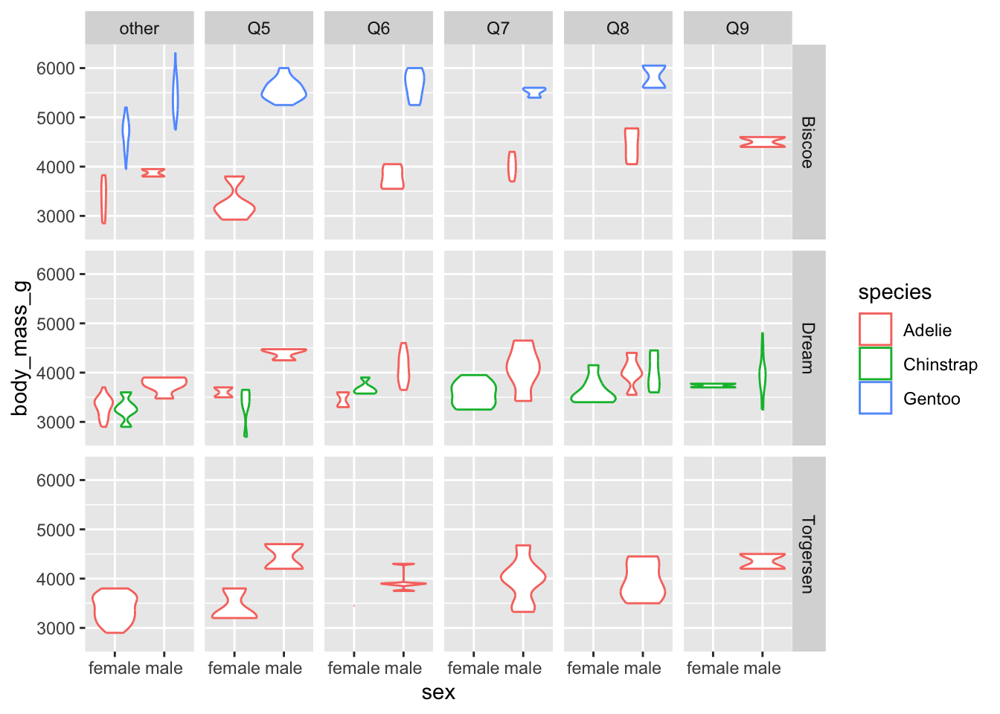
| Version | Author | Date |
|---|---|---|
| 0c7e5d9 | rsettlage | 2023-08-22 |
# what does as_factor do differently?
penguins_new <- penguins_new %>%
mutate(bill_volume_buckets_fct = bill_volume_buckets %>% as_factor())
penguins_new %>%
ggplot(aes(x=sex, y=body_mass_g)) +
geom_violin(aes(color=species)) +
facet_grid(cols=vars(bill_volume_buckets_fct), rows=vars(island))
Warning: Groups with fewer than two data points have been dropped.
Groups with fewer than two data points have been dropped.
Groups with fewer than two data points have been dropped.
Groups with fewer than two data points have been dropped.
Groups with fewer than two data points have been dropped.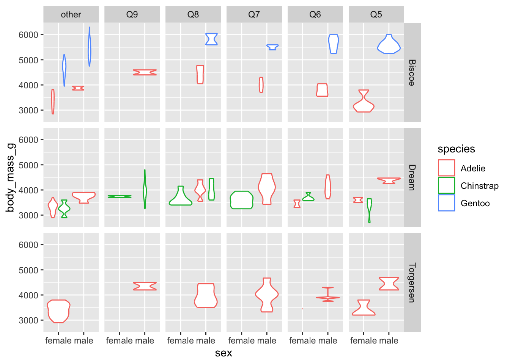
| Version | Author | Date |
|---|---|---|
| 0c7e5d9 | rsettlage | 2023-08-22 |
# to reverse the factor levels, use fct_rev
penguins_new <- penguins_new %>%
mutate(bill_volume_buckets_fct2 = bill_volume_buckets_fct %>% as_factor() %>% fct_rev())
# what if we want to re-order with a non sortable order?
penguins_new <- penguins_new %>%
mutate(bill_volume_buckets_fct3 = bill_volume_buckets_fct %>% as_factor() %>% fct_relevel("other", after=Inf))
penguins_new %>%
ggplot(aes(x=sex, y=body_mass_g)) +
geom_violin(aes(color=species)) +
facet_grid(cols=vars(bill_volume_buckets_fct3), rows=vars(island))
Warning: Groups with fewer than two data points have been dropped.
Groups with fewer than two data points have been dropped.
Groups with fewer than two data points have been dropped.
Groups with fewer than two data points have been dropped.
Groups with fewer than two data points have been dropped.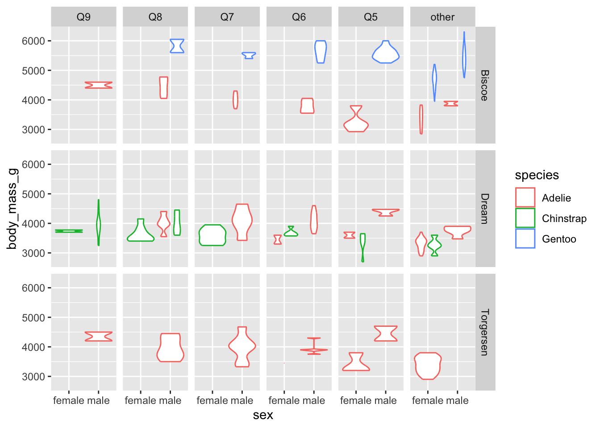
| Version | Author | Date |
|---|---|---|
| 0c7e5d9 | rsettlage | 2023-08-22 |
What about for a model?
What you need for a model is a “one-hot” encoded variable. It creates
a new column for each unique value of the categorical variable. Each of
these columns are binary with values 1 or 0 depending on whether the
value of the variable is equal to the unique value being encoded by this
column. The R function lm (through model.matrix) does this
for us.
# in this, what is does the intercept represent?
model.matrix(bill_length_mm~sex+bill_volume, penguins_new) %>% head()
(Intercept) sexmale bill_volume
1 1 0 11959.02
2 1 0 12325.08
3 1 0 11596.34
4 1 0 11646.46
5 1 0 12658.84
6 1 1 12514.70
# if we just wanted the sex and species encodings
model.matrix(~sex+species+0, penguins_new) %>% head()
sexfemale sexmale speciesChinstrap speciesGentoo
1 1 0 0 0
2 1 0 0 0
3 1 0 0 0
4 1 0 0 0
5 1 0 0 0
6 0 1 0 0
#model.matrix(~sex+species-1, penguins_new)
penguins_new %>%
group_by(sex) %>%
summarise(means = mean(bill_volume))
# A tibble: 2 × 2
sex means
<fct> <dbl>
1 female 11373.
2 male 14698.
lm(bill_volume~sex+0, penguins_new)
Call:
lm(formula = bill_volume ~ sex + 0, data = penguins_new)
Coefficients:
sexfemale sexmale
11373 14698 Recipes package
The recipes package aims to make our data engineering
steps reproducible and easier for new data. The data engineering steps
would come after data cleaning. Suppose, for example, we wanted to
predict the penguin sex based on species, island, and observable
physical characteristics including flipper_length_mm plus
bill_volume. Using recipes and starting with
the original dataset:
set.seed(16234)
# Put 80% of the data into the training set
penguins_new <- palmerpenguins::penguins %>%
select(-year) %>%
filter(complete.cases(.)) %>%
mutate_if(is.factor, as_factor)
penguins_split <- initial_split(
penguins_new,
prop = 0.95)
# now do the split
train_data <- training(penguins_split)
test_data <- testing(penguins_split)
# start with the main ingredient
pengiun_recipe <- recipe(sex~., data=train_data) %>%
step_center(all_numeric_predictors()) %>%
step_scale(all_numeric_predictors()) %>%
step_dummy(all_nominal_predictors())
train_data_baked <- pengiun_recipe %>%
prep() %>%
bake(train_data)
test_data_baked <- pengiun_recipe %>%
prep() %>%
bake(test_data) Just for fun:
h2o.init()
Connection successful!
R is connected to the H2O cluster:
H2O cluster uptime: 10 minutes 44 seconds
H2O cluster timezone: America/New_York
H2O data parsing timezone: UTC
H2O cluster version: 3.42.0.2
H2O cluster version age: 2 months and 15 days
H2O cluster name: H2O_started_from_R_rsettlag_ibf816
H2O cluster total nodes: 1
H2O cluster total memory: 3.11 GB
H2O cluster total cores: 10
H2O cluster allowed cores: 10
H2O cluster healthy: TRUE
H2O Connection ip: localhost
H2O Connection port: 54321
H2O Connection proxy: NA
H2O Internal Security: FALSE
R Version: R version 4.3.1 (2023-06-16)
h2o.no_progress()
train_h2o <- as.h2o(train_data_baked)
test_h2o <- as.h2o(test_data_baked)
y <- "sex"
x <- setdiff(names(train_h2o), y)
# later
# h2o_glm <- h2o.glm(x, y, training_frame = train_h2o, family = "binomial")
automl_models_h2o <- h2o.automl(
x = x,
y = y,
training_frame = train_h2o,
max_runtime_secs = 300,
nfolds = 5
)
automl_models_h2o@leaderboard
model_id auc logloss
1 StackedEnsemble_BestOfFamily_4_AutoML_2_20231011_73716 0.9738012 0.2000552
2 StackedEnsemble_BestOfFamily_6_AutoML_2_20231011_73716 0.9734006 0.2052259
3 DeepLearning_grid_1_AutoML_2_20231011_73716_model_5 0.9731202 0.2613943
4 StackedEnsemble_AllModels_1_AutoML_2_20231011_73716 0.9722790 0.2091836
5 StackedEnsemble_AllModels_2_AutoML_2_20231011_73716 0.9721989 0.2131409
6 GLM_1_AutoML_2_20231011_73716 0.9720386 0.2163959
aucpr mean_per_class_error rmse mse
1 0.9709274 0.06337379 0.2339755 0.05474451
2 0.9692092 0.06651845 0.2373853 0.05635176
3 0.9703540 0.07929736 0.2530308 0.06402457
4 0.9679836 0.06974322 0.2432631 0.05917694
5 0.9689515 0.07292793 0.2452905 0.06016742
6 0.9679493 0.07611265 0.2477119 0.06136119
[134 rows x 7 columns]
# grab first model
best_model <- automl_models_h2o@leaderboard %>%
as_tibble() %>%
slice(1)
best_model
# A tibble: 1 × 7
model_id auc logloss aucpr mean_per_class_error rmse mse
<chr> <dbl> <dbl> <dbl> <dbl> <dbl> <dbl>
1 StackedEnsemble_BestOfF… 0.974 0.200 0.971 0.0634 0.234 0.0547
best_model_results <- h2o.getModel(paste0(best_model[1]))
predictions <- h2o.predict(best_model_results, newdata = test_h2o) %>%
as.tibble() %>%
bind_cols(test_data_baked %>% select(flipper_length_mm, sex))
Warning: `as.tibble()` was deprecated in tibble 2.0.0.
ℹ Please use `as_tibble()` instead.
ℹ The signature and semantics have changed, see `?as_tibble`.
This warning is displayed once every 8 hours.
Call `lifecycle::last_lifecycle_warnings()` to see where this warning was
generated.
predictions %>%
ggplot(aes(x=flipper_length_mm, y=predict)) +
geom_point(aes(color=as_factor(sex))) +
theme(legend.position = "bottom") 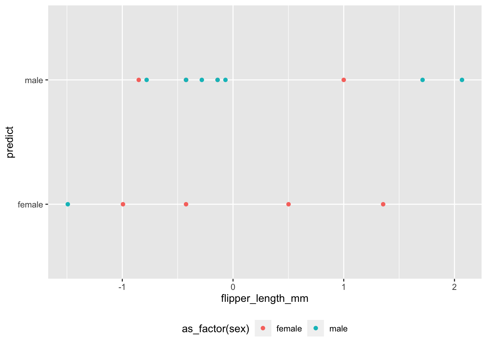
| Version | Author | Date |
|---|---|---|
| 0c7e5d9 | rsettlage | 2023-08-22 |
# quick confusion matrix
#?yardstick
predictions %>% yardstick::conf_mat(sex, predict) %>% autoplot(type="heatmap")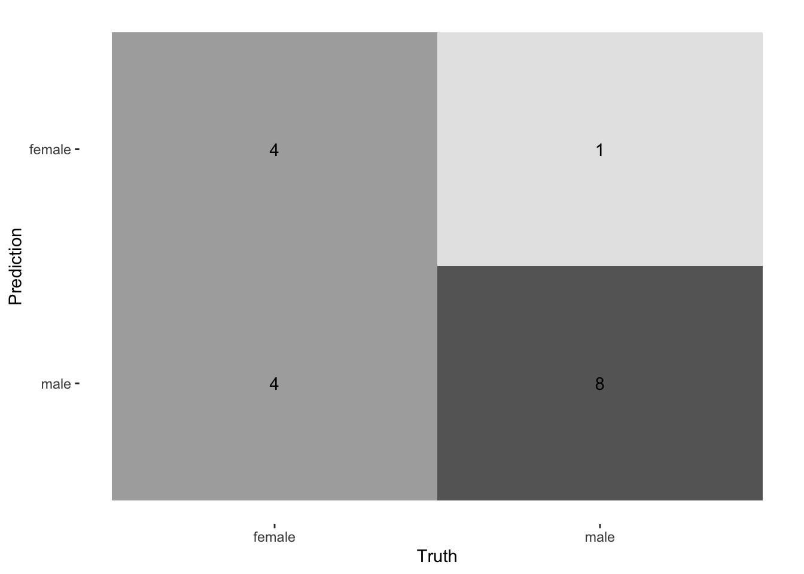
| Version | Author | Date |
|---|---|---|
| 0c7e5d9 | rsettlage | 2023-08-22 |
# just curious what the model looks like on the training data
predictions_train_data <- h2o.predict(best_model_results, newdata = train_h2o) %>% as.tibble() %>% bind_cols(train_data_baked %>% select(flipper_length_mm, sex))
predictions_train_data %>%
ggplot(aes(x=flipper_length_mm, y=predict)) +
geom_point(aes(color=as_factor(sex))) +
theme(legend.position = "bottom") 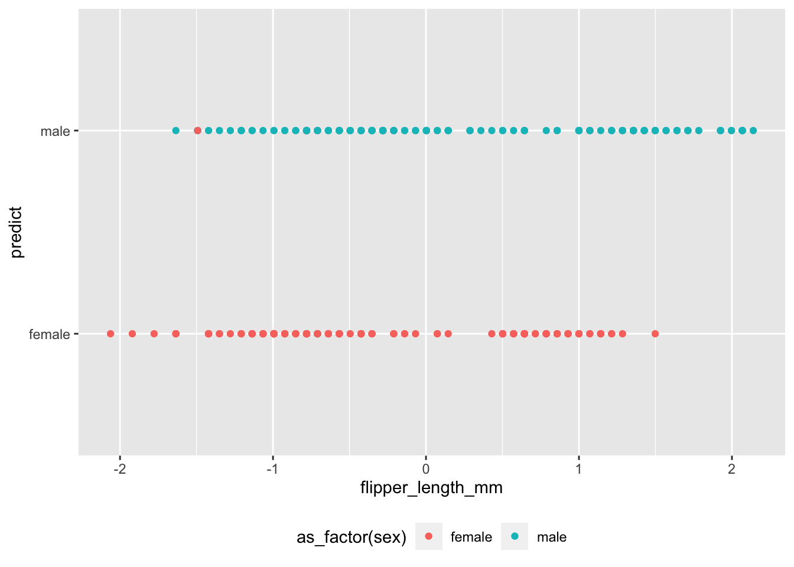
| Version | Author | Date |
|---|---|---|
| 0c7e5d9 | rsettlage | 2023-08-22 |
Python
Not to be left out, ports to python exist for forcats – siuba, but not for the recipes package. :(
The functions are identically named. The docs aren’t great. BUT, I
found datar which looks very promising:
Today’s Agenda
- Apply
- group_by, summarise
- map
- LIME
Apply family of functions
We often want to “apply” a function along a “margin” of our data. In the previous example, we used a matrix operation, but what if we have a custom function we wish to use.
In R, we have helper functions to further simplify our code by obviating the for loop.
Apply family:
apply, lapply , sapply, vapply, mapply, rapply, and tapply
Also parxxApply
Nice tutorial:
https://www.r-bloggers.com/r-tutorial-on-the-apply-family-of-functions/
Apply detail
apply(X, MARGIN, FUN, …)
x <- cbind(x1 = 3, x2 = c(4:1, 2:5))
dimnames(x)[[1]] <- letters[1:8]
# colmeans
apply(x,2,mean)
x1 x2
3 3
# rowmeans
apply(x,2,mean)
x1 x2
3 3
# apply to list elements
y<-list(a = 1:10, beta = exp(-3:3), logic = c(TRUE,FALSE,FALSE,TRUE))
lapply(y,mean)
$a
[1] 5.5
$beta
[1] 4.535125
$logic
[1] 0.5
sapply(y,mean)
a beta logic
5.500000 4.535125 0.500000 What is difference between various apply functions
We could start with the help ?apply, ?sapply. The main
differences are:
http://www.dummies.com/programming/r/how-to-use-the-apply-family-of-functions-in-r/
group_by and summarize
Summary functions also exist in the tidyverse. For instance:
palmerpenguins::penguins %>%
summarise_if(is.numeric, mean, na.rm=TRUE)
# A tibble: 1 × 5
bill_length_mm bill_depth_mm flipper_length_mm body_mass_g year
<dbl> <dbl> <dbl> <dbl> <dbl>
1 43.9 17.2 201. 4202. 2008.
palmerpenguins::penguins %>%
select(-year) %>%
filter(complete.cases(.)) %>%
group_by(species, island, sex) %>%
summarize(count=n())
`summarise()` has grouped output by 'species', 'island'. You can override using
the `.groups` argument.
# A tibble: 10 × 4
# Groups: species, island [5]
species island sex count
<fct> <fct> <fct> <int>
1 Adelie Biscoe female 22
2 Adelie Biscoe male 22
3 Adelie Dream female 27
4 Adelie Dream male 28
5 Adelie Torgersen female 24
6 Adelie Torgersen male 23
7 Chinstrap Dream female 34
8 Chinstrap Dream male 34
9 Gentoo Biscoe female 58
10 Gentoo Biscoe male 61Map
purrr::map is a function to iterate and operate on each element of a list.
palmerpenguins::penguins %>%
mutate(bill_volume=bill_length_mm*bill_depth_mm^2) %>%
select(-bill_length_mm, -bill_depth_mm) %>%
filter(complete.cases(.)) %>%
nest(data = c(-species, -sex, -island)) %>%
mutate(fit = map(data, ~ lm(body_mass_g~bill_volume+flipper_length_mm, data = .))) %>%
mutate(results = map(fit, broom::augment)) %>%
unnest(results) %>%
ggplot(aes(x = body_mass_g, y = .fitted)) +
geom_abline(intercept = 0, slope = 1, alpha = .2) + # Line of perfect fit
geom_point(aes(color=sex), alpha=0.2) +
facet_grid(rows=vars(island), cols=vars(species), scales="free")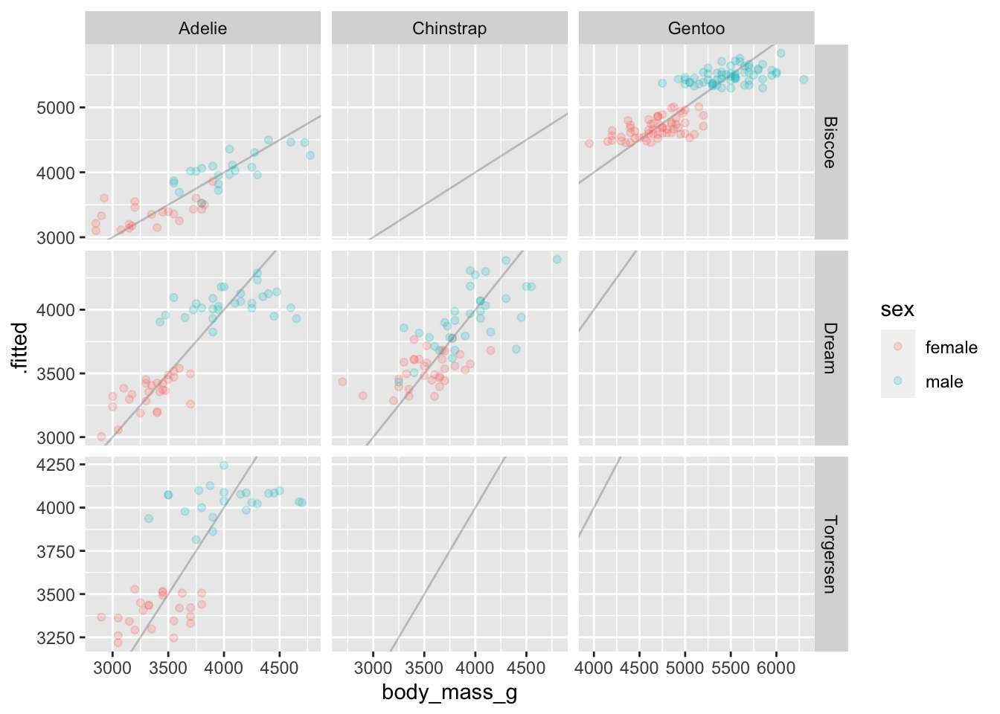
| Version | Author | Date |
|---|---|---|
| 0c7e5d9 | rsettlage | 2023-08-22 |
LIME
Local Interpretable Model-Agnostic Explanations
Basically create a bunch of permutations of the data point of interest to get an idea of the importance of each variable affecting the outcome of interest.
Need to create the explainer object and then the explanation.
Note, to use LIME, we may want to use use untransformed data. Something to play with.ya
predictions
# A tibble: 17 × 5
predict female male flipper_length_mm sex
<fct> <dbl> <dbl> <dbl> <fct>
1 female 0.955 0.0446 -0.424 female
2 male 0.000546 0.999 -0.424 male
3 female 0.799 0.201 -1.49 male
4 male 0.389 0.611 -0.852 female
5 female 0.672 0.328 -0.994 female
6 male 0.00811 0.992 -0.282 male
7 male 0.0221 0.978 -0.780 male
8 female 0.733 0.267 -0.139 female
9 male 0.00536 0.995 -0.139 male
10 male 0.00157 0.998 -0.0683 male
11 female 1.00 0.000416 0.501 female
12 male 0.00284 0.997 1.71 male
13 female 0.998 0.00152 1.36 female
14 male 0.000214 1.00 2.07 male
15 male 0.230 0.770 1.00 female
16 male 0.0663 0.934 -0.424 female
17 male 0.0166 0.983 -0.424 male
# Create Random Forest model with ranger via caret
fit.caret <- train(
sex ~ .,
data = train_data,
method = 'ranger',
trControl = trainControl(method = "cv", number = 5, classProbs = TRUE),
tuneLength = 1,
importance = 'impurity'
)
explainer_caret <- lime::lime(train_data, fit.caret, n_bins = 5)
explanation_caret <- lime::explain(
x = test_data %>% slice(1),
explainer = explainer_caret,
n_permutations = 5000,
kernel_width = .75,
n_features = 5,
feature_select = "highest_weights",
labels = "female"
)
lime::plot_features(explanation_caret)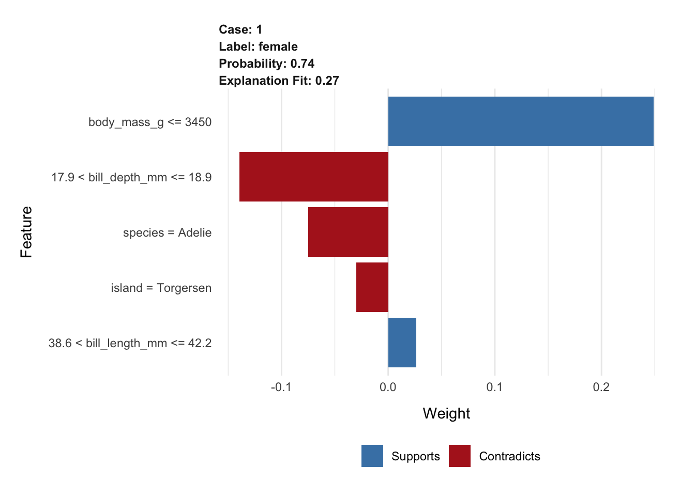
| Version | Author | Date |
|---|---|---|
| 0c7e5d9 | rsettlage | 2023-08-22 |
## fixed the penguins, was a case of me not providing explainer with same data format as model
# Put most of the data into the training set, want the other set more like a true
# test set as h20 is doing cross validation so the validation data set is pulled
# from the training dataset
# get dataset reformatted and filtered, dont want to deal with missing data
penguins_new <- palmerpenguins::penguins %>%
select(-year) %>%
filter(complete.cases(.)) %>%
mutate_if(is.factor, as_factor)
# split data into train and test (validation comes from train)
penguins_split <- initial_split(
penguins_new,
prop = 0.95)
# now do the split
train_data <- training(penguins_split)
test_data <- testing(penguins_split)
# just want to center and scale, leave factors to h2o
pengiun_recipe <- recipe(sex~., data=train_data) %>%
step_center(all_numeric_predictors()) %>%
step_scale(all_numeric_predictors())
train_data_baked <- pengiun_recipe %>%
prep() %>%
bake(train_data)
test_data_baked <- pengiun_recipe %>%
prep() %>%
bake(test_data)
# and off to h2o ...
h2o.init()
Connection successful!
R is connected to the H2O cluster:
H2O cluster uptime: 15 minutes 54 seconds
H2O cluster timezone: America/New_York
H2O data parsing timezone: UTC
H2O cluster version: 3.42.0.2
H2O cluster version age: 2 months and 15 days
H2O cluster name: H2O_started_from_R_rsettlag_ibf816
H2O cluster total nodes: 1
H2O cluster total memory: 3.06 GB
H2O cluster total cores: 10
H2O cluster allowed cores: 10
H2O cluster healthy: TRUE
H2O Connection ip: localhost
H2O Connection port: 54321
H2O Connection proxy: NA
H2O Internal Security: FALSE
R Version: R version 4.3.1 (2023-06-16)
h2o.no_progress()
train_h2o <- as.h2o(train_data_baked)
test_h2o <- as.h2o(test_data_baked)
y <- "sex"
x <- setdiff(names(train_h2o), y)
automl_models_h2o <- h2o.automl(
x = x,
y = y,
training_frame = train_h2o,
max_runtime_secs = 300,
nfolds = 5
)
automl_models_h2o@leaderboard
model_id auc logloss
1 StackedEnsemble_BestOfFamily_6_AutoML_3_20231011_74226 0.9735123 0.2063478
2 StackedEnsemble_BestOfFamily_4_AutoML_3_20231011_74226 0.9732318 0.2037884
3 StackedEnsemble_AllModels_6_AutoML_3_20231011_74226 0.9724304 0.2122296
4 GBM_grid_1_AutoML_3_20231011_74226_model_5 0.9713084 0.2179271
5 DeepLearning_grid_1_AutoML_3_20231011_74226_model_3 0.9711080 0.2247578
6 GBM_grid_1_AutoML_3_20231011_74226_model_19 0.9707073 0.2149110
aucpr mean_per_class_error rmse mse
1 0.9715516 0.06020838 0.2436508 0.05936571
2 0.9711922 0.06331397 0.2421750 0.05864874
3 0.9702905 0.06952515 0.2470474 0.06103244
4 0.9688063 0.07872170 0.2516731 0.06333935
5 0.9697849 0.08158686 0.2552767 0.06516618
6 0.9654635 0.06629934 0.2450829 0.06006564
[149 rows x 7 columns]
# grab first model
best_model <- automl_models_h2o@leaderboard %>%
as_tibble() %>%
slice(1)
best_model
# A tibble: 1 × 7
model_id auc logloss aucpr mean_per_class_error rmse mse
<chr> <dbl> <dbl> <dbl> <dbl> <dbl> <dbl>
1 StackedEnsemble_BestOfF… 0.974 0.206 0.972 0.0602 0.244 0.0594
best_model_results <- h2o.getModel(paste0(best_model[1]))
# make some quick predictions to see how we did
predictions <- h2o.predict(best_model_results, newdata = test_h2o) %>%
as.tibble() %>%
bind_cols(
test_data_baked %>% select(flipper_length_mm, sex)
)
predictions %>% yardstick::conf_mat(sex, predict) %>% autoplot(type="heatmap")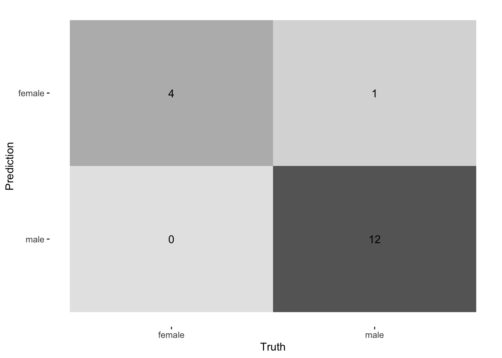
| Version | Author | Date |
|---|---|---|
| 0c7e5d9 | rsettlage | 2023-08-22 |
## ok, now for the fun, lets look at what the importance of each feature is
## build the explainer
explainer_penguins <- train_data %>%
select(-sex) %>%
lime::lime(
model = best_model_results,
bin_continous = TRUE,
n_bins = 4,
quantile_bins = TRUE
)
summary(explainer_penguins)
Length Class Mode
model 1 H2OBinomialModel S4
preprocess 1 -none- function
bin_continuous 1 -none- logical
n_bins 1 -none- numeric
quantile_bins 1 -none- logical
use_density 1 -none- logical
bin_continous 1 -none- logical
feature_type 6 -none- character
bin_cuts 6 -none- list
feature_distribution 6 -none- list
# explain a data point
explanation <- test_data %>% slice(1) %>% select(-sex) %>%
lime::explain(
explainer = explainer_penguins,
n_labels = 1,
#labels = "female",
n_features = 4,
n_permutations = 5000,
kernel_width = 0.75
)
# plot the importance in explaining the decision
lime::plot_features(explanation)
| Version | Author | Date |
|---|---|---|
| 0c7e5d9 | rsettlage | 2023-08-22 |
# can do it for many predictions
explanations <- test_data %>% slice(1:20) %>% select(-sex) %>%
lime::explain(
explainer = explainer_penguins,
n_labels = 1,
n_features = 8,
#n_permutations = 5000,
kernel_width = 0.9
)
lime::plot_explanations(explanations)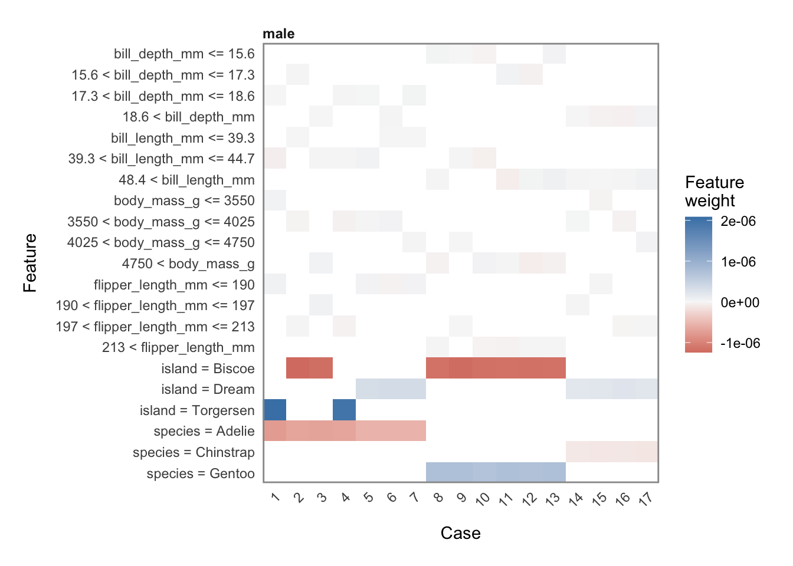
| Version | Author | Date |
|---|---|---|
| 0c7e5d9 | rsettlage | 2023-08-22 |
Another example …
## pulled directly from the H2O writup ...
h2o.init()
Connection successful!
R is connected to the H2O cluster:
H2O cluster uptime: 21 minutes 4 seconds
H2O cluster timezone: America/New_York
H2O data parsing timezone: UTC
H2O cluster version: 3.42.0.2
H2O cluster version age: 2 months and 15 days
H2O cluster name: H2O_started_from_R_rsettlag_ibf816
H2O cluster total nodes: 1
H2O cluster total memory: 3.29 GB
H2O cluster total cores: 10
H2O cluster allowed cores: 10
H2O cluster healthy: TRUE
H2O Connection ip: localhost
H2O Connection port: 54321
H2O Connection proxy: NA
H2O Internal Security: FALSE
R Version: R version 4.3.1 (2023-06-16)
h2o.no_progress()
# create data sets
df <- modeldata::attrition %>%
dplyr::mutate_if(is.ordered, factor, ordered = FALSE) %>%
dplyr::mutate(Attrition = factor(Attrition, levels = c("Yes", "No")))
index <- 1:4
train_obs <- df[-index, ]
local_obs <- df[index, ]
# create h2o objects for modeling
y <- "Attrition"
x <- setdiff(names(train_obs), y)
train_obs.h2o <- as.h2o(train_obs)
local_obs.h2o <- as.h2o(local_obs)
# Create Random Forest model with ranger via caret
fit.caret <- train(
Attrition ~ .,
data = train_obs,
method = 'ranger',
trControl = trainControl(method = "cv", number = 5, classProbs = TRUE),
tuneLength = 1,
importance = 'impurity'
)
# create h2o models
h2o_rf <- h2o.randomForest(x, y, training_frame = train_obs.h2o)
h2o_glm <- h2o.glm(x, y, training_frame = train_obs.h2o, family = "binomial")
h2o_gbm <- h2o.gbm(x, y, training_frame = train_obs.h2o)
# ranger model --> model type not built in to LIME
fit.ranger <- ranger::ranger(
Attrition ~ .,
data = train_obs,
importance = 'impurity',
probability = TRUE
)
explainer_caret <- lime(train_obs, fit.caret, n_bins = 5)
class(explainer_caret)
[1] "data_frame_explainer" "explainer" "list"
summary(explainer_caret)
Length Class Mode
model 25 train list
preprocess 1 -none- function
bin_continuous 1 -none- logical
n_bins 1 -none- numeric
quantile_bins 1 -none- logical
use_density 1 -none- logical
feature_type 31 -none- character
bin_cuts 31 -none- list
feature_distribution 31 -none- list
explanation_caret <- explain(
x = local_obs,
explainer = explainer_caret,
n_permutations = 5000,
dist_fun = "gower",
kernel_width = .75,
n_features = 10,
feature_select = "highest_weights",
labels = c("Yes","No")
)And the explanation figures:
plot_features(explanation_caret)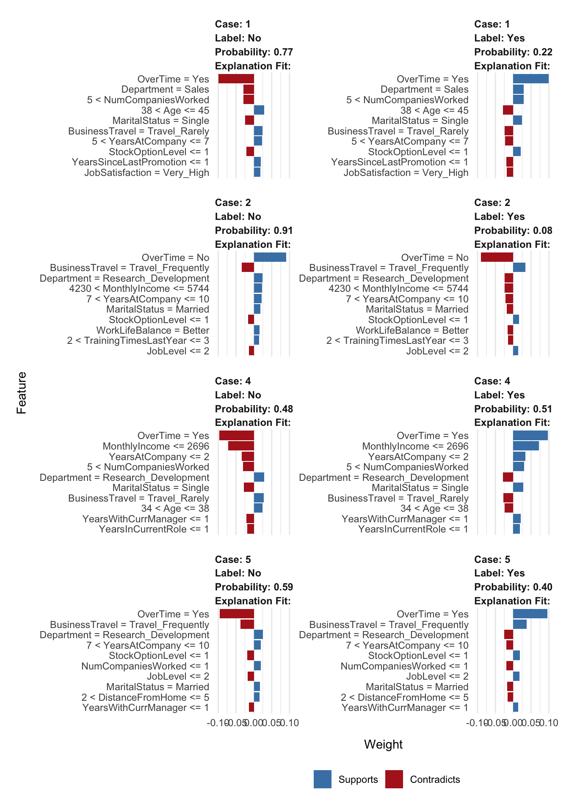
| Version | Author | Date |
|---|---|---|
| 0c7e5d9 | rsettlage | 2023-08-22 |
plot_explanations(explanation_caret)
| Version | Author | Date |
|---|---|---|
| 0c7e5d9 | rsettlage | 2023-08-22 |
sessionInfo()
R version 4.3.1 (2023-06-16)
Platform: aarch64-apple-darwin20 (64-bit)
Running under: macOS Monterey 12.4
Matrix products: default
BLAS: /Library/Frameworks/R.framework/Versions/4.3-arm64/Resources/lib/libRblas.0.dylib
LAPACK: /Library/Frameworks/R.framework/Versions/4.3-arm64/Resources/lib/libRlapack.dylib; LAPACK version 3.11.0
locale:
[1] en_US.UTF-8/en_US.UTF-8/en_US.UTF-8/C/en_US.UTF-8/en_US.UTF-8
time zone: America/New_York
tzcode source: internal
attached base packages:
[1] stats graphics grDevices utils datasets methods base
other attached packages:
[1] caret_6.0-94 lattice_0.21-8 lime_0.5.3
[4] h2o_3.42.0.2 rsample_1.2.0 recipes_1.0.8
[7] skimr_2.1.5 palmerpenguins_0.1.1 reticulate_1.32.0
[10] lubridate_1.9.2 forcats_1.0.0 stringr_1.5.0
[13] dplyr_1.1.3 purrr_1.0.2 readr_2.1.4
[16] tidyr_1.3.0 tibble_3.2.1 ggplot2_3.4.3
[19] tidyverse_2.0.0 data.table_1.14.8 knitr_1.43
loaded via a namespace (and not attached):
[1] bitops_1.0-7 pROC_1.18.4 rlang_1.1.1
[4] magrittr_2.0.3 git2r_0.32.0 furrr_0.3.1
[7] e1071_1.7-13 compiler_4.3.1 png_0.1-8
[10] vctrs_0.6.3 reshape2_1.4.4 crayon_1.5.2
[13] pkgconfig_2.0.3 shape_1.4.6 fastmap_1.1.1
[16] backports_1.4.1 ellipsis_0.3.2 labeling_0.4.3
[19] utf8_1.2.3 promises_1.2.1 rmarkdown_2.24
[22] prodlim_2023.08.28 tzdb_0.4.0 bit_4.0.5
[25] xfun_0.40 glmnet_4.1-8 cachem_1.0.8
[28] jsonlite_1.8.7 highr_0.10 later_1.3.1
[31] broom_1.0.5 parallel_4.3.1 R6_2.5.1
[34] bslib_0.5.1 stringi_1.7.12 ranger_0.15.1
[37] parallelly_1.36.0 rpart_4.1.19 jquerylib_0.1.4
[40] Rcpp_1.0.11 assertthat_0.2.1 iterators_1.0.14
[43] future.apply_1.11.0 base64enc_0.1-3 httpuv_1.6.11
[46] Matrix_1.5-4.1 splines_4.3.1 nnet_7.3-19
[49] timechange_0.2.0 tidyselect_1.2.0 rstudioapi_0.15.0
[52] yaml_2.3.7 timeDate_4022.108 codetools_0.2-19
[55] curl_5.0.2 listenv_0.9.0 plyr_1.8.9
[58] withr_2.5.0 evaluate_0.21 future_1.33.0
[61] survival_3.5-5 proxy_0.4-27 pillar_1.9.0
[64] whisker_0.4.1 stats4_4.3.1 foreach_1.5.2
[67] generics_0.1.3 rprojroot_2.0.3 RCurl_1.98-1.12
[70] hms_1.1.3 munsell_0.5.0 scales_1.2.1
[73] globals_0.16.2 class_7.3-22 glue_1.6.2
[76] tools_4.3.1 ModelMetrics_1.2.2.2 gower_1.0.1
[79] fs_1.6.3 grid_4.3.1 yardstick_1.2.0
[82] ipred_0.9-14 colorspace_2.1-0 nlme_3.1-162
[85] repr_1.1.6 cli_3.6.1 modeldata_1.2.0
[88] workflowr_1.7.0 fansi_1.0.4 lava_1.7.2.1
[91] gtable_0.3.4 sass_0.4.7 digest_0.6.33
[94] farver_2.1.1 htmltools_0.5.6 lifecycle_1.0.3
[97] hardhat_1.3.0 bit64_4.0.5 MASS_7.3-60